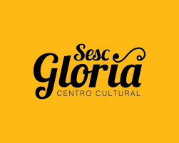

Sobre o Sesc Glória
O Glória, atualmente conhecido por Centro Cultural Sesc Glória, é um teatro localizado no Centro Histórico de Vitória, capital do Espírito Santo, sendo um dos teatros mais antigos da cidade.
História
O Sesc Glória abriga as mais diversas manifestações culturais nas várias linguagens artísticas. O local foi inaugurado em 27 de setembro de 2014. O edifício preserva as características da fachada de época, original de 1932 (projeto do engenheiro alemão Ricardo Wright, de arquitetura eclética), e apresenta um interior projetado e adaptado para abrigar um equipamento cultural contemporâneo. O Sesc Glória é um dos primeiros centros culturais do estado do Espírito Santo e um dos mais completos do país. Possui espaços voltados às Artes Cênicas, Artes Visuais, Cinema, Literatura e Música, além de uma Biblioteca especializada em Arte e Cultura com mais de 7 mil itens.
O Teatro Glória está localizado na Avenida Jerônimo Monteiro, uma das principais do Centro Histórico. Possui arquitetura eclética. É interessante dizer que o Glória foi o primeiro edifício com mais de cinco andares em Vitória, sendo, portanto, um grande marco para a cidade.
A casa de espetáculos foi construída no antigo Jardim Municipal, que era chamado de Éden Park, onde havia certo antigo cinema. Contudo, o local foi vendido e adquirido pela empresa Santos e Cia. por volta de 1926. O projeto do Glória foi feito pelo arquiteto Ricardo Wright.
O teatro possui estrutura de concreto armado, sendo uma edificação com revestimento em pó de pedra. Durante toda a sua trajetória no cenário da cultura local, o edifício foi cinema e teatro. As demais dependências foram utilizadas por diversas empresas para fins comerciais como, por exemplo, hotel e escritórios da produção cafeeira.